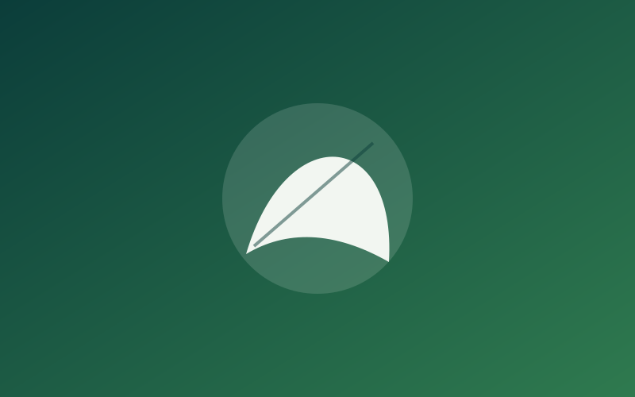
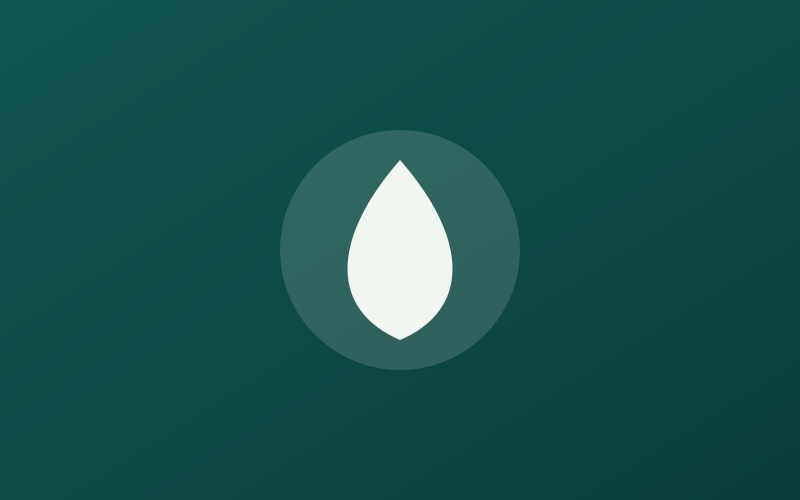
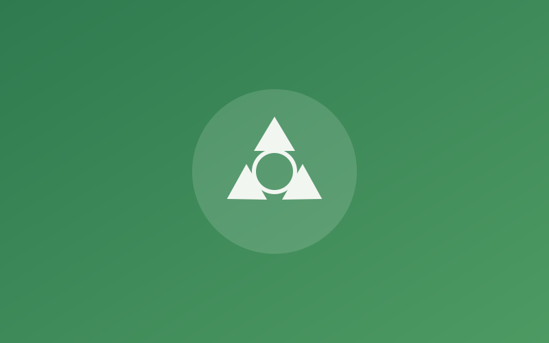
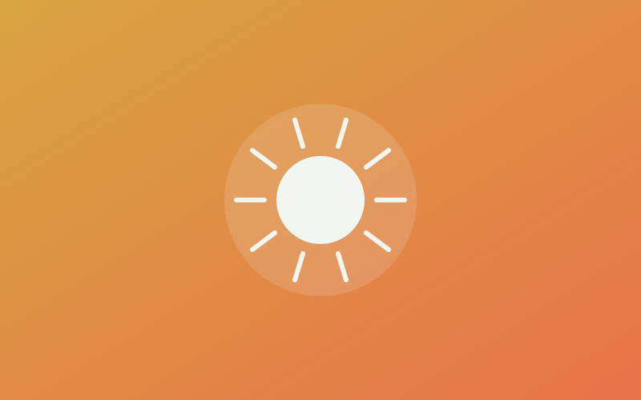
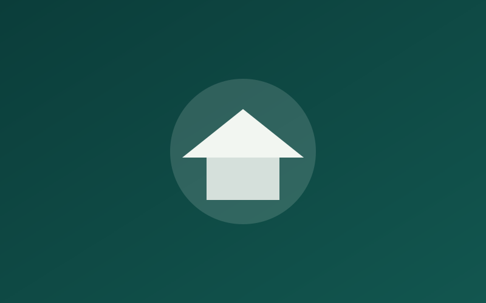
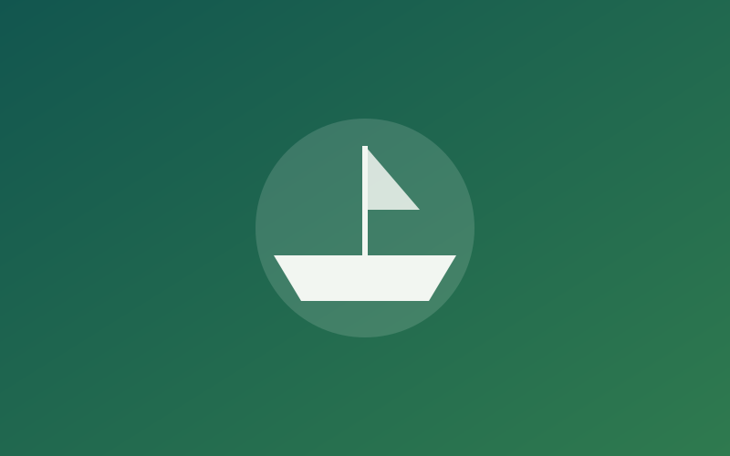

Mangrove Shoreline Restoration
Replanting mangrove belts along degraded creek banks to reduce erosion, rebuild fish nurseries and protect villages from storm surge.
Location: Aboadze & Whin Estuary
Ongoing — 52,000 seedlings planted
From mangrove nurseries to school climate clubs, here's what your support makes possible.

Replanting mangrove belts along degraded creek banks to reduce erosion, rebuild fish nurseries and protect villages from storm surge.
Location: Aboadze & Whin Estuary
Ongoing — 52,000 seedlings planted
Rehabilitating boreholes and training household hygiene champions to cut waterborne disease in underserved settlements.
Location: Anaji & New Takoradi
Ongoing — 900 households served
Weekly beach clean-ups feed a women-led co-operative that sorts and resells recyclable plastic, cutting ocean litter and creating income.
Location: Sekondi Beach Front
Phase 1 Completed — 22 tonnes diverted
Installing solar cold-storage units so fishmongers can cut post-catch losses without relying on diesel generators.
Location: Shama Fishing Harbour
Launching Q4 2026
After-school clubs teaching students to monitor rainfall, tides and waste, then carry lessons home to their families.
Location: 40+ basic & SHS schools, Western Region
Ongoing — 6,200 students enrolled
Training artisanal fishers in sustainable catch methods and closed-season compliance to protect long-term fish stocks.
Location: Aboadze, Dixcove & Busua
Ongoing — 210 fishers trained| Project | Focus Area | Location | Status |
|---|---|---|---|
| Mangrove Shoreline Restoration | Environment | Aboadze / Whin Estuary | Ongoing |
| Clean Water for Anaji | Water & Sanitation | Anaji / New Takoradi | Ongoing |
| Coastal Plastic Recovery | Waste Management | Sekondi Beach Front | Phase 1 Complete |
| Solar-Powered Fish Cold Rooms | Renewable Energy | Shama Harbour | Planned |
| Coastal Climate Clubs | Education | Western Region schools | Ongoing |
| Sustainable Fisheries Support | Community Development | Aboadze / Dixcove / Busua | Ongoing |
| 6 active programs · 18 communities · growing every quarter | |||
Browse photos from the field or sign up to volunteer on our next community day.